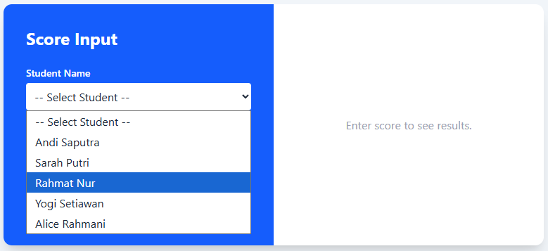
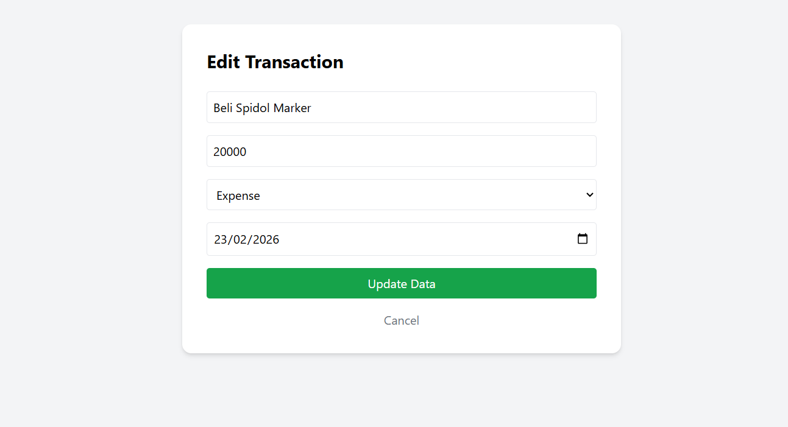

ICT Practical Examination
Good Luck!
Tuesday, 25 November 2025
INSTRUCTIONS
- Create a static website based on a given case study.
- The website must be built using HTML for structure and Tailwind CSS for styling.
- Your final output should be a single HTML file containing all the necessary code, including the link to the Tailwind CSS CDN.
- The CDN can be accessed on the Tailwind CSS website. Link: Tailwind CDN
- Ensure your website is responsive and user-friendly.
Time Allotment
120 Minutes
Case Study: Student Grade Checker
Context
You are working as a Junior Web Developer tasked with perfecting a simple web-based grade status checker system. This system is designed to calculate a student's average score and determine their grade category. The system must be able to :
- accept input for theoretical and practical scores.
- retrieve relevant student data (Name and Class) from a master data array.
- determine the academic grade based on the average score.
Task
Start by analyzing the basic structure of the psas-1.html file to identify the variables, loops, and HTML IDs that will be modified in the Task.
- Understand the structure of studentData array and how the for/foreach loop works, which is used to search for student data.
- Create a JavaScript object array named studentData that contains the students' master data by adding data for 5 new students from the following table to the studentData array:
- Ensure all HTML IDs for displaying results and input have been correctly identified.
- Display students data in a dropdown list by looping (foreach) on the studentData array.
- Modify the JavaScript function checkGrade() to perform the following steps:
- Get the input values for Theory Score and Practice Score.
- Search for the student data (Name and Class) using a for loop and the Student ID Number (NIS) selected from the master data.
- Calculate the Average Score (avg) using the formula:
- Determine the Grade using an if...else if...else structure based on the following grade criteria:
- Modify the outGrade , outScore, and other information (Name, Class, Theory Score, Practice Score) elements based on the example output so that:
- it displays the Grade text (e.g., "Grade A (Amazing)") calculated in step 5.
- it applies the appropriate styling class (e.g., bg-green-100 text-green-700) to the outGrade element based on the resulting Grade (Predikat).
| nis | studentName | studentClass |
|---|---|---|
| 101 | Andi Saputra | XII MIPA 1 |
| 102 | Sarah Putri | XII MIPA 2 |
| 103 | Rahmat Nur | XII MIPA 1 |
| 104 | Yogi Setiawan | XII MIPA 3 |
| 105 | Alice Rahmani | XII MIPA 4 |
average score = (Theory Score + Practice Score) / 2
| Average Score | Grade | colorClass |
|---|---|---|
| ≥ 90 | A (Amazing) | bg-green-100 text-green-700 |
| ≥ 80 | B (Good) | bg-blue-100 text-blue-700 |
| ≥ 70 | C (Not Bad) | bg-yellow-100 text-yellow-700 |
| < 70 | NOT PASS | bg-red-100 text-red-700 |
Challenge Plus Point
Add input validation at the beginning of the checkGrade() function.
- if the input (Student ID, Theory Score, and Practice Score) is invalid (empty or outside the 0-100 range).
- Then display an error message ('Error! Student’s score is not valid.') using alert().
Submission
- Save your file as [PSAS_FullName_Class].html. (eg. PSAS_Putera Islamiyadi_X1.html)
- Ensure the code is well-structured and easy to read.
Output References


×